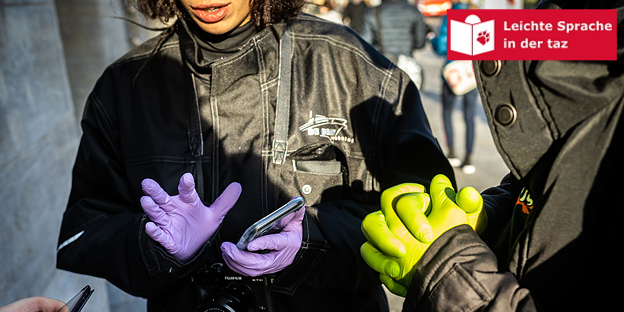

Viele Menschen erkranken aktuell am Corona-Virus. Wir informieren Sie in Leichter Sprache über das Virus und die Schutz-Maßnahmen.
Es gibt viele verschiedene Geschlechter. Und alle Geschlechter sind wichtig. Aber unsere Sprache ist vor allem männlich.

Viele Menschen helfen Flüchtlingen. Die taz stellt einige Helfer aus Sachsen und Brandenburg vor.
Ich bin damit einverstanden, dass mir externe Inhalte angezeigt werden. Damit können personenbezogene Daten an Drittplattformen übermittelt werden. Mehr dazu in unserer Datenschutzerklärung.
Baris Kul verkauft Döner in Dresden. Dabei trifft er auf tolle Leute, aber auch auf Nazis.
Am 26. Mai 2019 ist die Europa-Wahl. Was sagen die Politiker in Europa vor der Wahl zum Klima-Schutz?
Bald findet die Europa-Wahl statt. Die Zeitung taz berichtet darüber. Auch in Leichter Sprache.
Menschen mit Vollbetreuung können bei der Europa-Wahl wählen. Sie müssen dazu ein Formular ausfüllen.
Seit 10 Jahren gibt es die Behinderten-Rechts-Konvention. Was hat sich seitdem in Deutschland verändert?
Im April 2019 findet das „taz lab“ statt. Das „taz lab“ ist eine große Veranstaltung mit spannenden Gesprächen und Vorträgen. Diesmal geht es um das Thema Europa.
Seit 100 Jahren haben Frauen das Wahl-Recht. Im Jahr 1919 konnten Frauen zum 1. Mal in Deutschland wählen.
Viele Firmen haben eine Schwer-Behinderten-Vertretung. Diese Vertretung wird aktuell neu gewählt, zum Beispiel in der Stadt Bremen.
Die Pille ist ein beliebtes Verhütungs-Mittel. Aber für Frauen hat sie viele Neben-Wirkungen. Wo bleibt die Pille für den Mann?
taz leicht gibt es bald nicht mehr regelmäßig. Ab Oktober gibt es die Texte nur noch zu besonderen Ereignissen.
Katrin Langensiepen ist Politikerin für Die Grünen. Sie will eine soziale Politik für ganz Europa machen.

Der Energie-Konzern RWE will einen Wald fällen. Viele Menschen protestieren dagegen.
An vielen Schulen in Deutschland fehlen Lehrer. Sie werden oft durch Quer-Einsteiger ersetzt. Ist das gut?
Greta ist eine Schülerin aus Schweden. Zur Schule geht sie gerade nicht. Sie kämpft für das Klima!
Musik spielt eine große Rolle in Berlin. Menschen mit Behinderungen wollen daran teilhaben.
Viele Menschen schreiben aktuell über ihre Rassismus-Erlebnisse in Deutschland. Sie wollen Aufmerksamkeit für dieses Thema.
Viele Gemeinden in Deutschland haben wenig Geld. Deshalb müssen immer mehr Freibäder schließen. Das darf nicht passieren! Freibäder sind wichtig!
In vielen deutschen Städten gibt es Demonstrationen. Die Menschen fordern mehr See-Not-Rettungen. See-Not-Retter retten Flüchtlinge vor dem Ertrinken.
Was passiert mit dem eigenen Facebook-Profil, wenn man gestorben ist? Ein Gericht hat dazu eine Entscheidung getroffen.
Der Innen-Minister Horst Seehofer stellt einen Plan vor. Er will weniger Flüchtlinge in Deutschland.
Bei der WM 2018 gibt es viel Lob für junge Mannschaften wie England und Frankreich. Aber spielen junge Spieler wirklich besser?

Roma sind fast immer die Verlierer. Verbände fordern nun, Abschiebungen während Corona auszusetzen.

Unser exklusives Testabo zum Fixpreis bietet ihnen die tägliche App-Ausgabe und die gedruckte taz am Wochenende. Je früher sie bestellen, desto mehr taz gibts fürs Geld.

Post-Corona-Kapitalismus • Restauration à la Biden • Polens teure Kohle • 200 Jahre Friedrich Engels